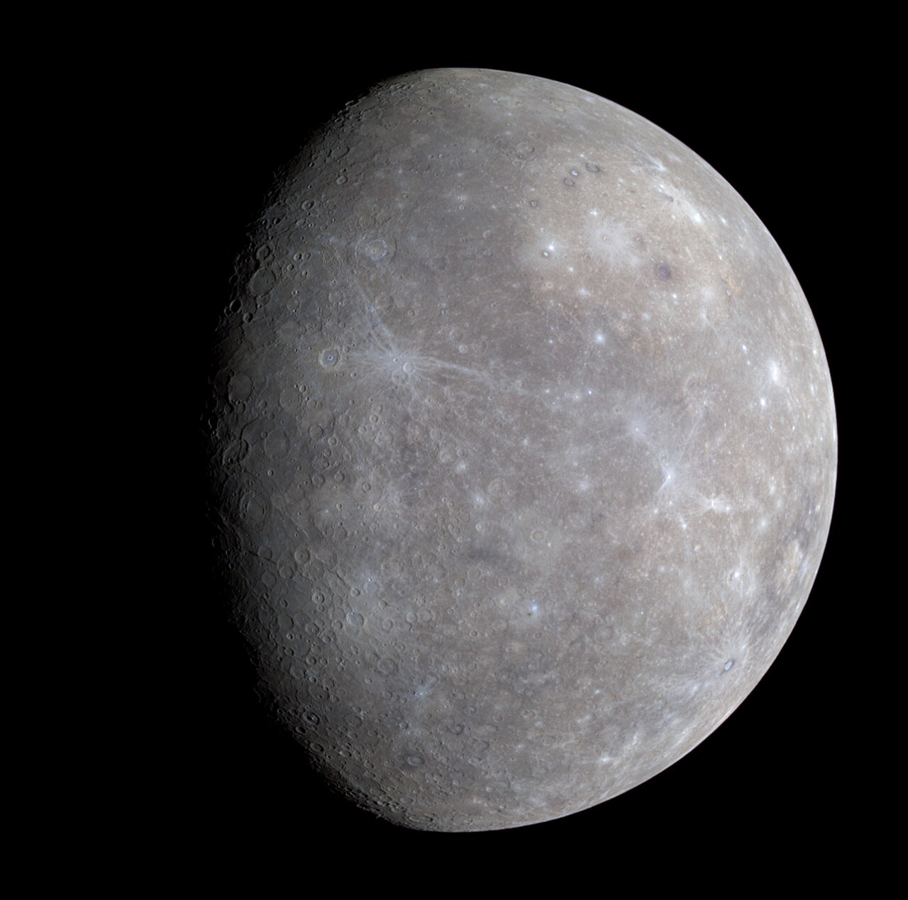
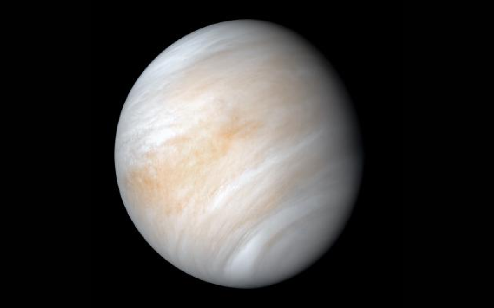
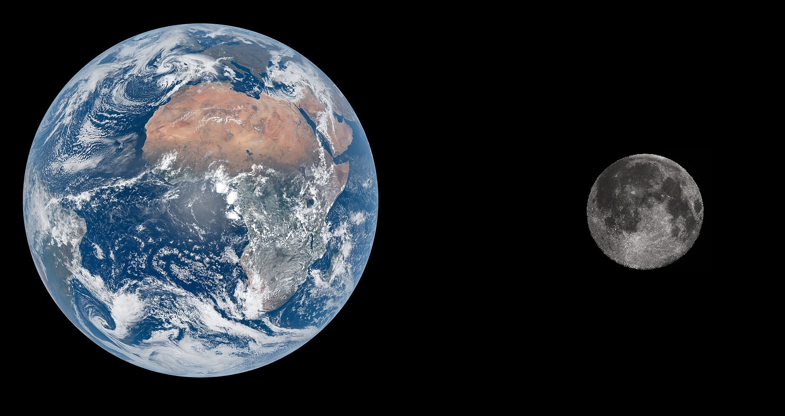
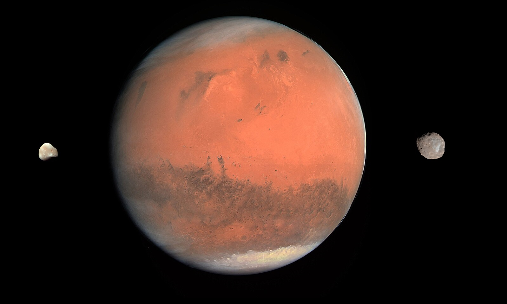
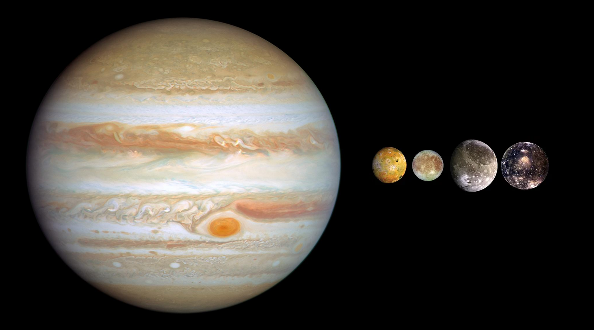
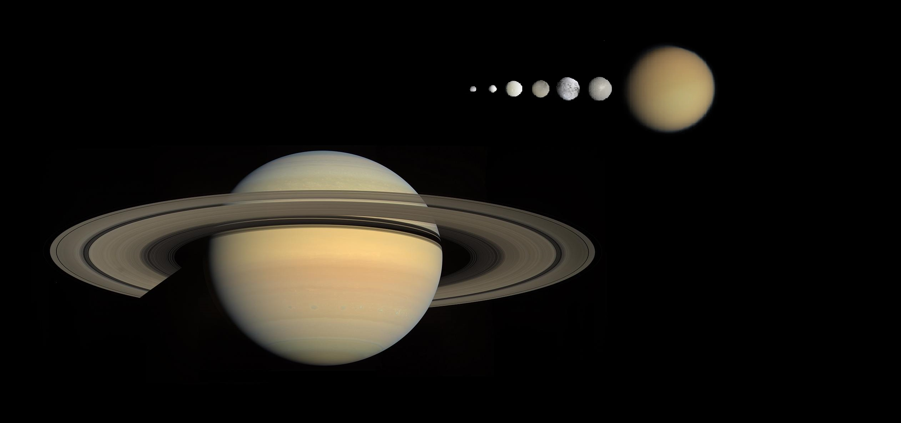
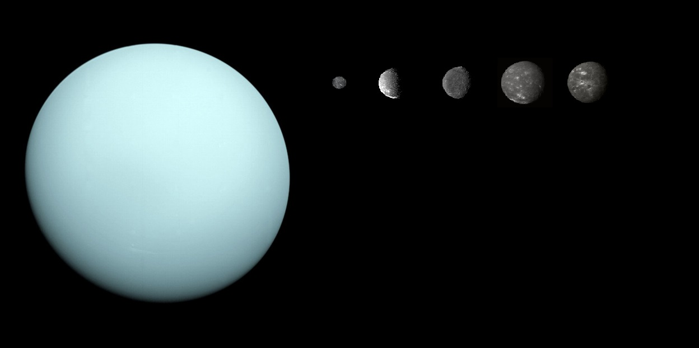
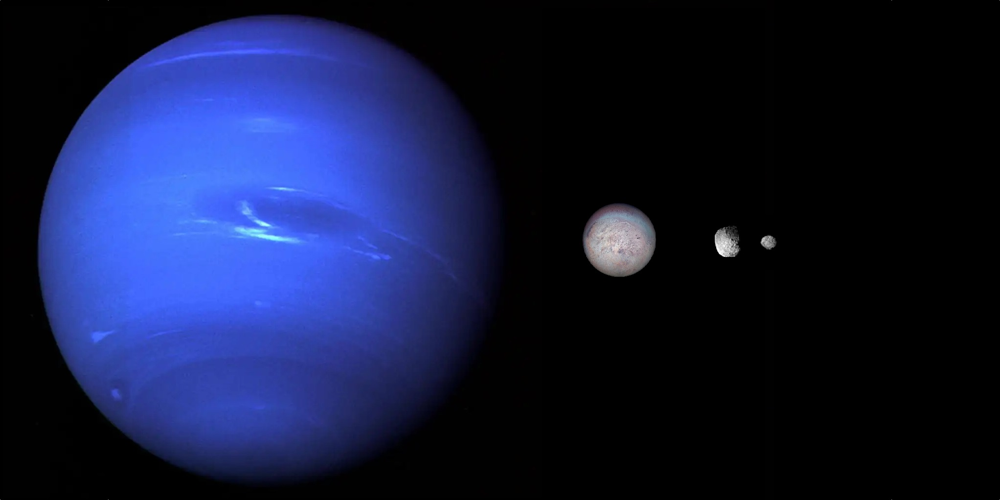

Солнечная Система
Солнце

Солнце - центр Солнечной Системы и единственная в ней звезда. Вокруг
него вращается всё в системе от ближайшего астероида 2021 ph27 до
далёкого Облака Оорта. Приблизительный возраст Солнца - около 4,5 млрд
лет. Солнце состоит преимущественно из Водорода на 92,1% и из Гелия на 7,8%
Меркурий

Меркурий - ближайшая планета к Солнцу и с 2006 года (после понижения Плутона)
самая маленбкая планета. Меркурий вращается вокруг Солнца за 88
Земных дней а вокруг своей оси за 59. В экзосфере Меркурия содержится Кислород,
Натрий, Водород, Гелий и Калий. Меркурий является второй самой плотной планетой системы.
Венера

Венера - вторая планета от солнца и самая горячая планета Солнечной Системы.
Температура на Венере около 460 градусов Цельсия. Венера схожа с Землёй
по размерам, она лишь слегка меньше Земли. Атмосфера Венеры состоит из Углекислого
газа и Серной кислоты, из которой также идёт дождь на Венере (только капли не долетают до поверхности).
Земля

Земля - третья планета от Солнца и единственная планета с органической жизнью. Атмосфера
Земли состоит в основном из Азота на 78% и из Кислорода на 21%. У Земли
есть один естественный спутник: Луна. Луна вращается вокруг Земли примерно за
27 дней и она приливно захвачена гравитацией Земли.
Марс

Марс - четвёртая планета от Солнца и последняя каменистая планета Солнечной Системы. Атмосфера
Марса очень разряжена и состоит преимущественноиз Углекислого газа. На Марсе
есть самая высокая гора в Солнечной системе: Гора Олимп. У Марса есть 2 естественных спутника: Фобос и Деймос.
Юпитер

Юпитер - пятая планета от солнца и ближайший к нему газовый гигант. Юпитер является самой большой
планетой Солнечной Системы, он в 2,5 раза массивнее всех остальных
планет, вместе взятых. Юпитер состоит в основном из Водородп и Гелия. У Юпитера
известно 115 естественных спутников на 2026 год, крупнейшие из них: Ганимед, Каллисто, Ио, Европа.
Сатурн

Сатурн - шестая планета от Солнца и самая менее плотная в Солнечной Системе. Плотность Сатурна
меньше воды, значит в теории он мог бы плавать. У сатурна
есть кольца, состоящие из камня, пыли и изо льда. Сатурн, как и Юпитер,
состоит из Водорода и Гелия. У Сатурна известно 293 естественных спутника на 2026 гогд,
крупнейшие из них: Титан, Рея, Япет, Диона, Тефия, Энцелад, Мимас, Гиперион.
Уран

Уран - седьмая планета от Солнца и ближайший ледяной гигант к нему. Уран состоит из Водорода,
Гелия и Метана, который даёт ему синий цвет. У Урана, как и у всех
планет-гигантов, есть кольца, их 13. Ось Урана наклонена на 98 градусов.
У Урана известно 29 естественных спутников, крупнейшие из них: Титания, Оберон, Умбриэль, Ариэль, Миранда.
Нептун

Нептун - восьмая планета от Солнца и, по состоянию на 2026 год, самая далёкая от Солнца. У Нептуна
есть 6 колец, состоящих из камня и пыли. Нептун, как и Уран, состоит
из Водорода, Гелия и Метана, что делает их единственными ледяными гигантами
в системе. У Нептуна известно 16 спутников, крупнейшие из них: Тритон, Протей, Ларисса.